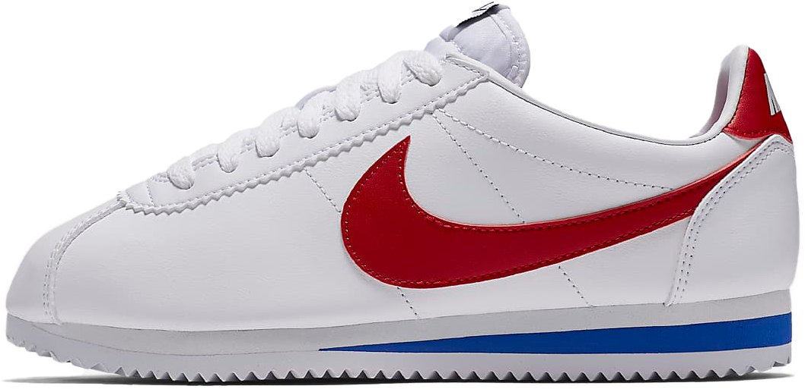

CORTEZ
THE NIKE CORTEZ WAS ONE OF NIKE’S FIRST EVER RUNNING SHOES. IT HAS A UNIQUELY SHAPED SILHOUETTE THAT FEATURES A LEATHER BODY, FOAM MIDSOLE, AND EDGED RUBBER OUTSOLE. IT WAS DESIGNED BY BILL BOWERMAN. THE CORTEZ MADE ITS CLAIM TO FAME WHEN IT WAS SEEN ON FOOT BY TOM HANKS IN THE MOVIE “FORREST GUMP.” THE MOVIE MADE THE SHOE SO POPULAR THAT THE NAME OF ITS ORIGINAL RED AND BLUE COLORWAY WAS CHANGED TO FORREST GUMP. THE CORTEZ HAS ALSO BEEN FEATURED IN OTHER COLLABORATIONS INCLUDING ONE WITH RAPPER KENDRICK LAMAR.
INITIAL RELEASE: 1972
RELEASES: 89
COLORWAY: FORREST GUMP
CURRENT RESALE PRICE: $75 (NIKE)